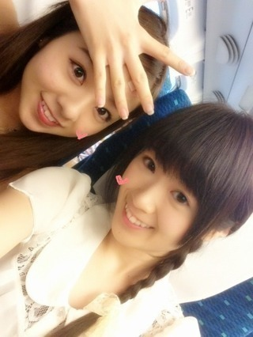
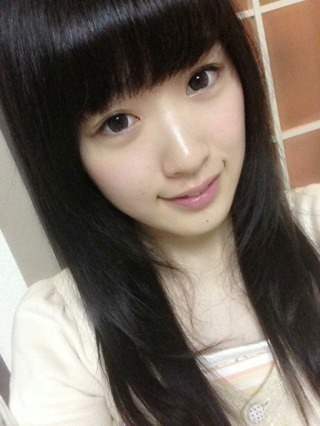
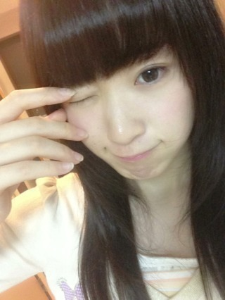

2013/0530Thu（´-`）.｡oO(い ざ出陣！！
只今、
新幹線なう！

ろってぃと隣♪
通路挟んで隣は陽菜ちゃん♪
プリンシパルへ
いざ出陣！！！
目の下も、皮膚も
だいぶ良くなりました(T_T)
みなさん、
ご心配をおかけしましたT^T
そしてイメチェンしました。

ぱっつんです(｡´_ゝ`｡)
高校生の時(ロング時代)
かしゆかさんに憧れて
長かった前髪をバッサリ
切ったことがあったんだけど、
似合わなすぎてね...
結局ピンで止めたの！笑
それ以来ロングになったら
前髪は伸ばすように決めてたの
ですが...
切っちゃった(σ´∀｀)σ
どうかな〜。
この前稽古の前の
ウォーミングアップで
ウィンクキラーやったよ♪♪
私は飛鳥にウィンクされて
倒れました( *´艸｀)
される方は嬉しいけど
する方は恥ずかしいよね！
あ、でも男の人にはできないや〜
カメラ通してならできるけど
直接されたら引くでしょー！？
逆に私がされたら...(￣▽￣)

でもやってみた、ごめん(σ´∀｀)σ笑
それでは〜( ´ ▽ ` )ﾉ
2013/05/30 17:24
コメント(548)
くっそかわええええええええ！！！！！！(///Д///)
パッツソ似合いすぎ！！！
キラーだ、キラーだwww
やばたん(照)(照)
パッツソ似合いすぎ！！！
キラーだ、キラーだwww
やばたん(照)(照)
やべえ
ぱっつん可愛い！！！！！
やばい_(:3｣∠)_
普段のかずみんも可愛い
すぎるけど、わたしぱっつんの
方がタイプかも( ∩ˇωˇ∩)♡
本当に可愛いよ〜
どうしよU・x・U笑
ウインクキラーわたしも遠足
とかでよくやってた！！
痴漢っていうのあるの知ってる？笑
周りに気付かれないように、
舌出す役の人！！！ｗｗｗ_(:3｣∠)_
大阪のプリンシパルも頑張れ♡♡
本当に応援してる( •̀ω•́ )
新曲も発表みたいだし、早く
かずみんに会いたいな( ˘ω˘ )♪♪
ちろる
ブログ更新待ってました！
かずみん＼(^o^)／
めっちゃ大好きです♪
プリンシパル頑張ってね(*^^*)
応援してますね(((o(*ﾟ▽ﾟ*)o)))
あと6thシングルめっちゃ
楽しみにしてますよー！！
最後に質問です！
今度球技大会があるんだけど
ドッチボールかフットサル
かバスケかテニスで迷ってます！
だったら何にでますか？
よかったら答えてください！
じゃあこれからも
お仕事など頑張ってね！
じゃあおやすみなさーい！
おおw
大分かわったじ!!うん、ちょっと違和感あるけど似合うよ！かわいい(o^^o)
三つ編みかわいいじ\(//∇//)\
プリンシパルでの6枚目楽しみやわ～＼(^o^)／
大分かわったじ!!うん、ちょっと違和感あるけど似合うよ！かわいい(o^^o)
三つ編みかわいいじ\(//∇//)\
プリンシパルでの6枚目楽しみやわ～＼(^o^)／
すごい似合ってる！！
かずみんは面白さに目がいってしまいがちだけど可愛い
そう
可愛い＼(^o^)／
今週の乃木どこ楽しみにしてます(^^ゞ
かずみんは面白さに目がいってしまいがちだけど可愛い
そう
可愛い＼(^o^)／
今週の乃木どこ楽しみにしてます(^^ゞ
新幹線？
どこに撮影かな？
お疲れっす(^｡^)
どこに撮影かな？
お疲れっす(^｡^)
いよいよ梅田やねー！
赤坂も行ったけど梅田めっちゃ楽しみ(((o(*ﾟ▽ﾟ*)o)))
明日行くよー！
赤坂も行ったけど梅田めっちゃ楽しみ(((o(*ﾟ▽ﾟ*)o)))
明日行くよー！
かずみん、こんばんは！
ぱっつん似合うよ！！
可愛い(^-^)/
プリンシパル頑張ってね。
ぱっつん似合うよ！！
可愛い(^-^)/
プリンシパル頑張ってね。
かずみん★かわいすぎる～(>.<)y-~超似合うよ!
もう二度見三度見しちゃったよ(>.<)
いよいよあしたからだね、応援してます♪がんばれーかずみん！
もう二度見三度見しちゃったよ(>.<)
いよいよあしたからだね、応援してます♪がんばれーかずみん！
カラコンしてる!?
ちわ！ハーイ＼(^o^)／
ぱっつんいいねー！ぱっつんの髪型あんま好きじゃないんだけど意外にも似合ってる！
かわいい(*^^*)
大阪公演頑張ってね！
ぱっつんいいねー！ぱっつんの髪型あんま好きじゃないんだけど意外にも似合ってる！
かわいい(*^^*)
大阪公演頑張ってね！
プリンシパル
頑張って下さい！
かずみんにウィングされたーい＼(^o^)／
体調に気を付けて
お仕事頑張って下さいヽ(￣▽￣)ノ
前乗りなんだね！！
リハとか色々あるもんね(；´Д｀)
パッツンめっちゃかわいいじゃん！！
これってすっぴん？？
これはあさってますます楽しみになってきた…！
このウィンクはフリってことでいいんですか？？
握手会でお願いしても…(・∀・)
リハとか色々あるもんね(；´Д｀)
パッツンめっちゃかわいいじゃん！！
これってすっぴん？？
これはあさってますます楽しみになってきた…！
このウィンクはフリってことでいいんですか？？
握手会でお願いしても…(・∀・)
お疲れ
ぱっつんにあう！
なんか雰囲気かわったね！
ひなちゃんやあo(^▽^)o
明日から公演頑張って！
肌荒れ大丈夫？身体に気をつけてゆっくり休んでください
ぱっつんにあう！
なんか雰囲気かわったね！
ひなちゃんやあo(^▽^)o
明日から公演頑張って！
肌荒れ大丈夫？身体に気をつけてゆっくり休んでください
ウィンクもぱっつんも
かわいいよ(^_-)
かわいいよ(^_-)
ずーさん、こんばんは！
目の下、お肌とも治って安心しました。
髪型、めっちゃ可愛い！超似合ってますよ！！
…ウィンクにやられてしまった…
目の下、お肌とも治って安心しました。
髪型、めっちゃ可愛い！超似合ってますよ！！
…ウィンクにやられてしまった…
かずみんこんばんは！
ぱっつんいいねヽ(ﾟ∀ﾟ)ﾉ ﾊﾟｯ☆つんヽ(ﾟ∀ﾟ)ﾉ ﾊﾟｯ☆つん
無駄にテンション高いわ(笑)
次の握手会ウインクキラーやろう(笑)
１対１でやるものじゃないけど←
明日からプリンシパル頑張ってね＼(^o^)／
なんとしても洋子を＼(^o^)／
ぱっつんいいねヽ(ﾟ∀ﾟ)ﾉ ﾊﾟｯ☆つんヽ(ﾟ∀ﾟ)ﾉ ﾊﾟｯ☆つん
無駄にテンション高いわ(笑)
次の握手会ウインクキラーやろう(笑)
１対１でやるものじゃないけど←
明日からプリンシパル頑張ってね＼(^o^)／
なんとしても洋子を＼(^o^)／
ヤッホーかずみん。
かずみんのウィンクオラにはいちころ！可愛いっす！
プリンシパル大阪土日行くから楽しみにしてるね。
かずみんのウィンクオラにはいちころ！可愛いっす！
プリンシパル大阪土日行くから楽しみにしてるね。
かずみん(((o(*ﾟ▽ﾟ*)o)))
アメージングっ‼
アメージングっ‼
こんばんは!!
明日から頑張ってね！
応援してるぜ！
ぱ、ぱっつん！
可愛いぜ。
では、握手会でウィンクリクエストさせていただきます(笑)
明日から頑張ってね！
応援してるぜ！
ぱ、ぱっつん！
可愛いぜ。
では、握手会でウィンクリクエストさせていただきます(笑)
パッツン♪
意外にいいんじゃない！？
意外にとか言っちゃったけど…(笑)
いいと思うよー(^^)
ウィンクいいな～
これはお願いしたらやってくれるんだよね？(笑)
意外にいいんじゃない！？
意外にとか言っちゃったけど…(笑)
いいと思うよー(^^)
ウィンクいいな～
これはお願いしたらやってくれるんだよね？(笑)
ぱっつん可愛すぎ(*≧∀≦*)♪
うわ～～～めちゃ可愛い！
にやついてしまったわ～～！ｗｗｗｗ ウフフ
ウフフ
からのウインクかよ～～！可愛すぎ・・・・・
あ～～～～ハート撃ち抜かれたわ～～
高山さんあなたやりますね～～！ｗｗｗ
かずみん大好き～～～！
にやついてしまったわ～～！ｗｗｗｗ
からのウインクかよ～～！可愛すぎ・・・・・
あ～～～～ハート撃ち抜かれたわ～～
高山さんあなたやりますね～～！ｗｗｗ
かずみん大好き～～～！
かずみん
新しい髪型凄くいい
もう一回
凄くいい
めちゃかわいい
あぁかわいい
新しい髪型凄くいい
もう一回
凄くいい
めちゃかわいい
あぁかわいい
アメイジング!!ヽ(￣▽￣)ノ
初めましてー♪(*≧∀≦*)
大阪公演ですよね？いきたいよー泣泣学校あるからいけないよー(泣)(>_<)
東京公演も見れなかったから見たさが半端じゃない！！とりあえず！頑張ってください！(*^^*)応援してます！
握手会のときに会いましょう!!
初めましてー♪(*≧∀≦*)
大阪公演ですよね？いきたいよー泣泣学校あるからいけないよー(泣)(>_<)
東京公演も見れなかったから見たさが半端じゃない！！とりあえず！頑張ってください！(*^^*)応援してます！
握手会のときに会いましょう!!
こんばんわん∪・ω・∪
かずみん、前髪ぱっつんにしても
似合うじゃない(≧▽≦)
かわいいよ(≧∇≦)b
ウインクなんて、アザ～ス!!
かずみんのウインクで
一撃ノックアウトっすｍ(。≧Д≦。)ｍ
大阪公演いけないけど
頑張って!!
今度の個握で会えるの
楽しみにしてま～すヾ(≧∇≦)
へばな(^.^/)))~~~bye!!
かずみん、前髪ぱっつんにしても
似合うじゃない(≧▽≦)
かわいいよ(≧∇≦)b
ウインクなんて、アザ～ス!!
かずみんのウインクで
一撃ノックアウトっすｍ(。≧Д≦。)ｍ
大阪公演いけないけど
頑張って!!
今度の個握で会えるの
楽しみにしてま～すヾ(≧∇≦)
へばな(^.^/)))~~~bye!!
こんばんは
皮膚と目の下良くなってよかったです
ぱっつんすごく可愛いよー(^-^)
明後日大阪公演見に行きますb
皮膚と目の下良くなってよかったです
ぱっつんすごく可愛いよー(^-^)
明後日大阪公演見に行きますb
かずみんこんにちは。
僕的にはすごく可愛いと思うよ。
最近すごく悲しいことがあって・・・・。
かずみんは心が落ち込んで辛い時、どうしているのかな？
僕的にはすごく可愛いと思うよ。
最近すごく悲しいことがあって・・・・。
かずみんは心が落ち込んで辛い時、どうしているのかな？
全然似合ってるよ～って言われるでしょ？
うん、だってそーやん！
あしゅりんはウインクが得意なんやね～
プリンシパル頑張ってな
明日で多分部活の先輩たち、、、引退や・・・。
こんなに別れたくないのに別れなきゃいけないんだね？
んじゃ！！
うん、だってそーやん！
あしゅりんはウインクが得意なんやね～
プリンシパル頑張ってな
明日で多分部活の先輩たち、、、引退や・・・。
こんなに別れたくないのに別れなきゃいけないんだね？
んじゃ！！
かずみんお疲れさーん！
ぱっつんかずみんステキだよー(^O^)／
大阪公演頑張ってね！
あっ、3日しかないんだね。今知ったー。
ぱっつんかずみんステキだよー(^O^)／
大阪公演頑張ってね！
あっ、3日しかないんだね。今知ったー。
初投稿です！
パッツンめっちゃ似合ってます！
めっちゃ可愛いですよ！
パッツンめっちゃ似合ってます！
めっちゃ可愛いですよ！
直接とか多分キュン死しますわw←
お疲れ様です
ついに大阪ですか！
良いですね
一実さんの歌声を響かせて来て下さい(￣▽￣)
イメチェンしたんですね(°_°)
これは生で見てみたい笑
写真を見る限りは普通に似合ってると思いますよ^_^
ではあしたも頑張って行きましょう
ではまた
お疲れ様です
ついに大阪ですか！
良いですね
一実さんの歌声を響かせて来て下さい(￣▽￣)
イメチェンしたんですね(°_°)
これは生で見てみたい笑
写真を見る限りは普通に似合ってると思いますよ^_^
ではあしたも頑張って行きましょう
ではまた
かずみんヤッホー(o・・o)/
いよいよ明日か
三日連続で行くで♪
ぱっつん可愛い(*´ω｀*)
ウインクええやんええやん
やってや(笑)
全然引かんし
今度やってもらお( ￣▽￣)b
んじゃまた明日
ほなねﾉｼ
いよいよ明日か
三日連続で行くで♪
ぱっつん可愛い(*´ω｀*)
ウインクええやんええやん
やってや(笑)
全然引かんし
今度やってもらお( ￣▽￣)b
んじゃまた明日
ほなねﾉｼ
こんばんはかずみん(￣∇￣*)ゞ
とうとうプリンシバル大阪公演ですか(^o^)v
頑張ってくださいね！！！
めっちゃ応援してますよ！！
またいろんな役に挑戦してほしいです！！
とうとうプリンシバル大阪公演ですか(^o^)v
頑張ってくださいね！！！
めっちゃ応援してますよ！！
またいろんな役に挑戦してほしいです！！
かずみん♪
こんばんは☆彡
握手会では、胸元のバラが目印！
名古屋の「すかたん＠重陽の節句」です。
大阪前日入りなんですね（＾－＾）
自分は明日、名古屋から大阪に行きます(￣▽￣)ゞ
３日間５公演楽しみにしているよ～( ´ ▽ ` )ﾉ
目の下と皮膚
良くなってきて何よりです
でも、治りかけも気をつけてね♪
前髪ぱっつんのかずみん♪
可愛いよ～(*≧д≦)
ウィンクキラー・・・
是非とも握手会で直接やって下さい<(_ _)>
リクエストするから準備していてね♪
恥ずかしい時はかぼちゃだと思って(笑)
かずみんが明日からの３日間、楽しい舞台を過ごせますように♪
それでは、今回はこの辺で♪
こんばんは☆彡
握手会では、胸元のバラが目印！
名古屋の「すかたん＠重陽の節句」です。
大阪前日入りなんですね（＾－＾）
自分は明日、名古屋から大阪に行きます(￣▽￣)ゞ
３日間５公演楽しみにしているよ～( ´ ▽ ` )ﾉ
目の下と皮膚
良くなってきて何よりです
でも、治りかけも気をつけてね♪
前髪ぱっつんのかずみん♪
可愛いよ～(*≧д≦)
ウィンクキラー・・・
是非とも握手会で直接やって下さい<(_ _)>
リクエストするから準備していてね♪
恥ずかしい時はかぼちゃだと思って(笑)
かずみんが明日からの３日間、楽しい舞台を過ごせますように♪
それでは、今回はこの辺で♪
いつも、お仕事お疲れ様です！
いよいよ、16人のプリンシパルの大阪公演ですね！
無理はしても、無理をし過ぎるのだけは止めて下さい！
でも、高山一美さんが充実したい言えるくらいに、高山一美さんの全力を出しきってきて下さい！
高山一美さんはどんなヘアースタイルも似合ってますよ！
前髪ぱっつんの高山一美さんも可愛くてしょうがないです！
高山一美さんのウィンクキラーは可愛くてしょうがないです！
これからも、いつも、応援してます！
いよいよ、16人のプリンシパルの大阪公演ですね！
無理はしても、無理をし過ぎるのだけは止めて下さい！
でも、高山一美さんが充実したい言えるくらいに、高山一美さんの全力を出しきってきて下さい！
高山一美さんはどんなヘアースタイルも似合ってますよ！
前髪ぱっつんの高山一美さんも可愛くてしょうがないです！
高山一美さんのウィンクキラーは可愛くてしょうがないです！
これからも、いつも、応援してます！
こんばんは(^^
パッツン良いよ(o^^o)
明日に向けての気合いかな？
プリンシパル頑張ってね。
お休み〜＼(^o^)／
パッツン良いよ(o^^o)
明日に向けての気合いかな？
プリンシパル頑張ってね。
お休み〜＼(^o^)／
かずみん移動中ですか…(^-^)／
明日から大阪プリンシパル開幕しますね!!p(｀∀´q)
誠一さん頑張って!!(笑)(*´艸`)
自分はただいま夜勤なう(笑)(」゜□゜)」
おお!? ろってぃと隣とは…＼(^∨^)／
皮膚だいぶよくなって良かった…(^w^)
安心しましたが完治まで油断禁物です!!!(b^ー°)
もし具合優れなかったら看病まかせて!!!(b^ー°) 本職なんで(笑)(*´艸`)
かずみんのイメチェン……＼(°□°;)／おお……すごく綺麗で可愛いです!!(≧∇≦)／
ぱっつんかずみん……かわゆす…о(*^∨^*)о
似合いすぎ!!(o^∨^o)
かずみんのウィンク…倒れます…(*´∀`)ρ
仕事しながら倒れたらいかんいかん(笑)(笑)
握手会かずみんの所にいくからね!!p(｀∀´q) 今から楽しみです!!
合い言葉は……『剣道の話をしにいく!!』(笑)
かずみん明日からポジティブ say!でカッコイいいかずみん…綺麗なかずみん…可愛いかずみん…面白いかずみんをみせて下さい(^^)/
自分は千葉県から応援しています!!(^人^)
明日から大阪プリンシパル開幕しますね!!p(｀∀´q)
誠一さん頑張って!!(笑)(*´艸`)
自分はただいま夜勤なう(笑)(」゜□゜)」
おお!? ろってぃと隣とは…＼(^∨^)／
皮膚だいぶよくなって良かった…(^w^)
安心しましたが完治まで油断禁物です!!!(b^ー°)
もし具合優れなかったら看病まかせて!!!(b^ー°) 本職なんで(笑)(*´艸`)
かずみんのイメチェン……＼(°□°;)／おお……すごく綺麗で可愛いです!!(≧∇≦)／
ぱっつんかずみん……かわゆす…о(*^∨^*)о
似合いすぎ!!(o^∨^o)
かずみんのウィンク…倒れます…(*´∀`)ρ
仕事しながら倒れたらいかんいかん(笑)(笑)
握手会かずみんの所にいくからね!!p(｀∀´q) 今から楽しみです!!
合い言葉は……『剣道の話をしにいく!!』(笑)
かずみん明日からポジティブ say!でカッコイいいかずみん…綺麗なかずみん…可愛いかずみん…面白いかずみんをみせて下さい(^^)/
自分は千葉県から応援しています!!(^人^)
こんばんは♪
プリンシバル頑張ってね！
行けない分、すごい応援します！
ぱっつんのかずみんもめっちゃ似合ってるし可愛いよ～♪
プリンシバル頑張ってね！
行けない分、すごい応援します！
ぱっつんのかずみんもめっちゃ似合ってるし可愛いよ～♪
一実さぁーん(^o^)／
ぱっつんもウィンクも可愛いすぎ（照）
最近、ますます綺麗になっていく一実さんを見て、嬉しさと寂しさがあります。綺麗になって、大人になっていくんだなーって（しみじみ）
プリンシパル大阪公演も頑張ってください！まーこは会場に行けないけど、岡山県より一実さんにパワーを送らせていただきます！
いつも元気と笑顔をありがとう(^O^)
ごきげんよう( ~っ~)/
ぱっつんもウィンクも可愛いすぎ（照）
最近、ますます綺麗になっていく一実さんを見て、嬉しさと寂しさがあります。綺麗になって、大人になっていくんだなーって（しみじみ）
プリンシパル大阪公演も頑張ってください！まーこは会場に行けないけど、岡山県より一実さんにパワーを送らせていただきます！
いつも元気と笑顔をありがとう(^O^)
ごきげんよう( ~っ~)/
かずみん、こんばんわ。
目の下と皮膚良くなってよかったね。新幹線で隣のロッティーは大阪出身やから、色々オススメ教えてもらってな。
食べ物やったら、べたやけど、たこ焼きにお好み焼きかな。後、甘いもんやったら、堂島ロールが有名やで。
前髪ぱっつんもええ感じやで。
公演の成功を祈ってるよ
目の下と皮膚良くなってよかったね。新幹線で隣のロッティーは大阪出身やから、色々オススメ教えてもらってな。
食べ物やったら、べたやけど、たこ焼きにお好み焼きかな。後、甘いもんやったら、堂島ロールが有名やで。
前髪ぱっつんもええ感じやで。
公演の成功を祈ってるよ
こんばんわぁ～、かずみん♪
いざ出陣！！って、ちょっと面白い(o^_^o)
大阪プリンシパル、頑張ってね！
にしても、写真全部、可愛すぎだよー。
おデコ出し最強をいってきましたが、少しブレそうです。
うーん、どっちが・・・
どっちも好き♪
たまには、おデコ出しもあると嬉しいです。
目のクマと、肌も良くなったようで、なにより、なにより。
ななみんほどでは無いんだろうけど、かずみんも体調崩し
易いから、十分気をつけてね。
では。
いざ出陣！！って、ちょっと面白い(o^_^o)
大阪プリンシパル、頑張ってね！
にしても、写真全部、可愛すぎだよー。
おデコ出し最強をいってきましたが、少しブレそうです。
うーん、どっちが・・・
どっちも好き♪
たまには、おデコ出しもあると嬉しいです。
目のクマと、肌も良くなったようで、なにより、なにより。
ななみんほどでは無いんだろうけど、かずみんも体調崩し
易いから、十分気をつけてね。
では。
前髪もウインクもかわえーよ
(´ｰ｀)
日曜の最終行くよ(*´▽｀*)
(´ｰ｀)
日曜の最終行くよ(*´▽｀*)
|∀°)＜まいどまいど
|∀°)＜ようこそ大阪へ
|∀°)＜いよいよですなー
|∀°)＜楽しみだす
|∀°)＜ラスト５公演
|∀°)＜悔いのないようにねー
|∀°)＜高山一実を存分に見せてや
|∀°)＜ぱっつんは直接見て
|∀°)＜感想述べるぜ
|∀°)＜あ、
|∀°)＜ウインク待ってます(はーと)
|∀°)ﾉｼ
|∀°)＜ようこそ大阪へ
|∀°)＜いよいよですなー
|∀°)＜楽しみだす
|∀°)＜ラスト５公演
|∀°)＜悔いのないようにねー
|∀°)＜高山一実を存分に見せてや
|∀°)＜ぱっつんは直接見て
|∀°)＜感想述べるぜ
|∀°)＜あ、
|∀°)＜ウインク待ってます(はーと)
|∀°)ﾉｼ
パッツン可愛い(●´ω｀●)
速攻保存したわw
プリンシパルいよいよだね。
どこかの公演で念願の洋子役できたらいいなぁ♪( ´▽｀)
応援してるよ( ´ ▽ ` )ﾉ
最新の高山が最高の高山。
速攻保存したわw
プリンシパルいよいよだね。
どこかの公演で念願の洋子役できたらいいなぁ♪( ´▽｀)
応援してるよ( ´ ▽ ` )ﾉ
最新の高山が最高の高山。
大阪公演もがんばってね
前髪ぱっつんも、いままでと印象が違って見えて
いい感じだと思うよ(o･∀･)bﾞ
6thの握手会で話すネタに困ったら、かずみんに
ウィンクしてもらおう＼(＾▽＾)／
前髪ぱっつんも、いままでと印象が違って見えて
いい感じだと思うよ(o･∀･)bﾞ
6thの握手会で話すネタに困ったら、かずみんに
ウィンクしてもらおう＼(＾▽＾)／
ウィンクかわいいよー
こんばんわ〜♪
パッツンかわいい♪
ウィンクもめっちゃかわいい♪
いやいや引かないよ〜
むしろ見たいよね〜♪
そして、
とうとう明日から大阪公演
ですね。
体調に気を付けて頑張って
ください。
応援してます♪
パッツンかわいい♪
ウィンクもめっちゃかわいい♪
いやいや引かないよ〜
むしろ見たいよね〜♪
そして、
とうとう明日から大阪公演
ですね。
体調に気を付けて頑張って
ください。
応援してます♪


プリンいけないけど頑張ってねぬー×(^_^)／□☆□＼(^_^)